Chapter 5 · Part 1 — Ha-Ha
“Oh, no! No! No!” shouted Annie.
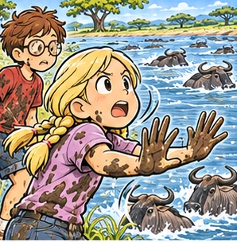
She raced down the bank, until she reached a sandy, clear spot.
“Here! Here!” she called.
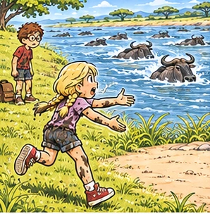
The wildebeests followed her with their wild eyes.
Jack watched in disbelief as the swimmers changed their course. Slowly, all the wildebeests swam to where Annie stood. She waved them in like a traffic policeman.
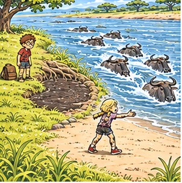
Jack grabbed his backpack.
“Annie,” he cried, “let’s go before we get trampled!”
“Keep it up,” she shouted to the wildebeests as she took off after Jack.
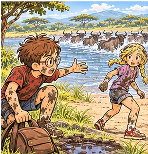
They ran farther up the river, away from the incoming wildebeests. Finally, they stopped to catch their breath. They looked back.
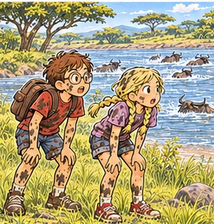
Everything seemed fine. The wildebeests were scrambling safely over the riverbank. Soon they would graze on the grass prepared by the zebras.
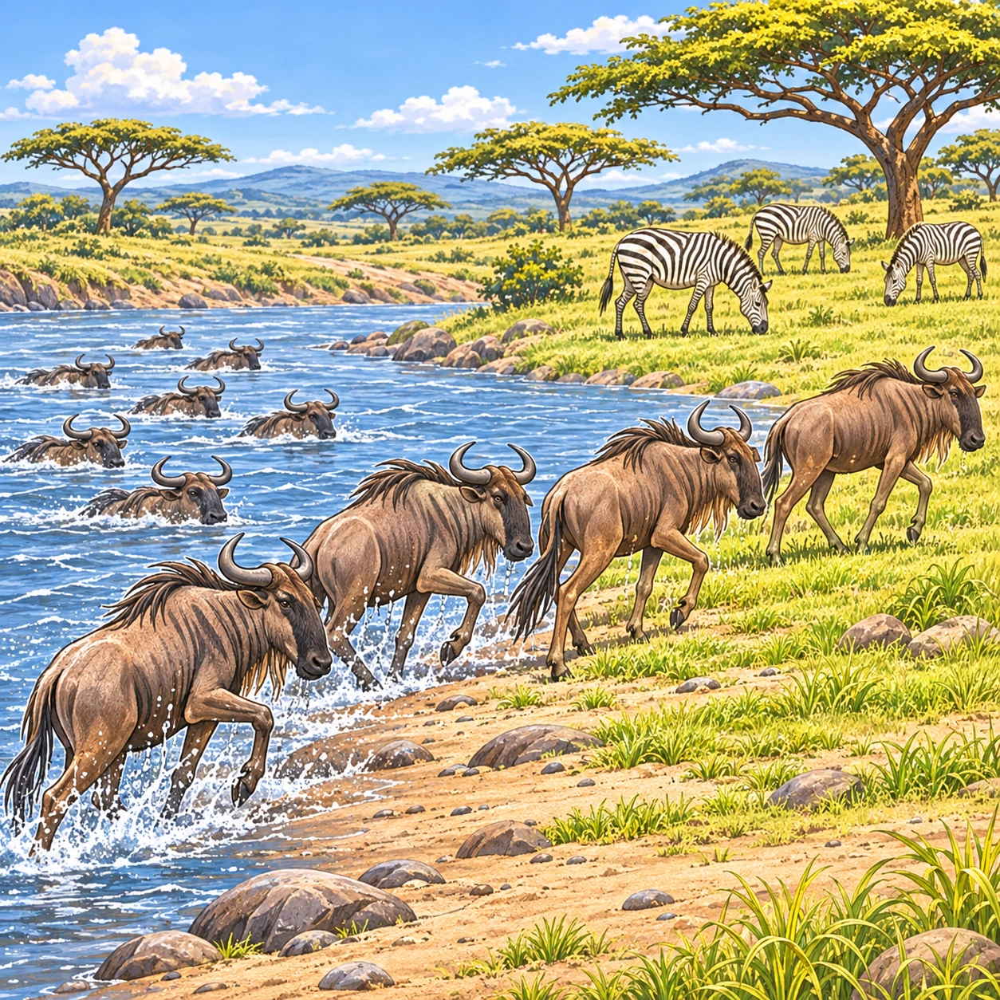
“Good work,” Jack said to Annie.
“Thanks,” she said. “Okay, now for our riddle … ”
“No, first we’ve got to get clean,” said Jack. “You look like you’re in a mud suit.”
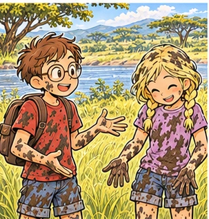
High-pitched laughter rang through the air. It sounded mocking and mean.
Jack and Annie turned around. They saw two spotted brown animals standing in the tall grass.
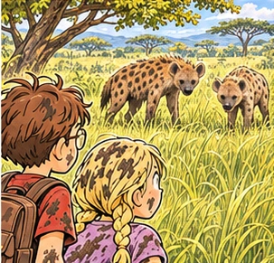
The creatures had bodies like dogs, but with sloping backs. They laughed again.
“Ha-ha,” said Annie. “You don’t look so great yourself.”
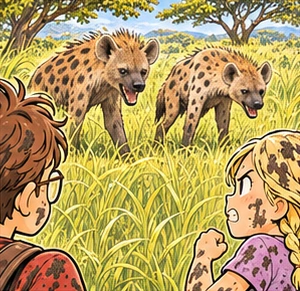
“What are they?” said Jack. He took out the book. He tried not to get mud on it as he looked for a picture. When he found it, he read aloud:
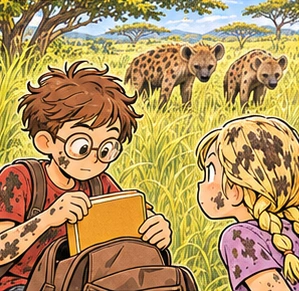
On the African plains, the hyena (hi-EE-nuh) is the ruling predator after the lion. It makes a sound similar to a high-pitched human laugh.
“What’s ‘predator’ mean?” said Annie.
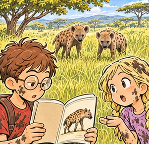
“It means it catches things and eats them,” said Jack.
“Oh,” said Annie. “Yuck.”
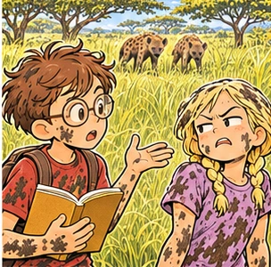
The two hyenas laughed again. And they moved closer to Jack and Annie.
Quietly, Jack read more:
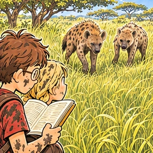
The hyena has a reputation for being a thief and a coward.
“Let’s see if they’re cowards,” whispered Annie. “Let’s try to scare them.”
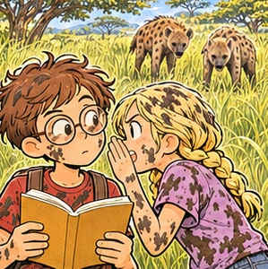
The hyenas laughed and moved a little closer.
“How?” Jack asked.
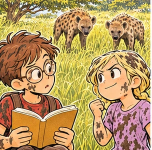
“Act like a monster!” said Annie. “Now!”
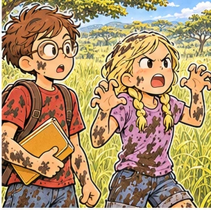
Jack and Annie made terrible monster faces. They put out their hands and rushed at the hyenas.
“ARGGGGHH!” they shouted.
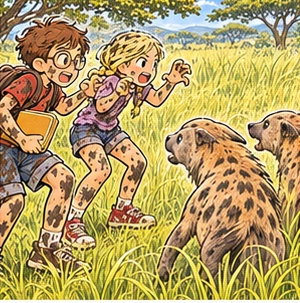
The hyenas yelped and scurried off.
“Scaredy-cats!” Annie shouted after them.
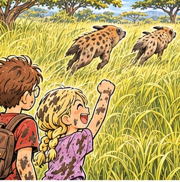
“Come on,” said Jack.
Annie and Jack took off in the other direction. They ran around a bend in the river.
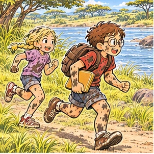
Jack heard the hyena laughter again. It sounded far away.
“Good,” he said, “they’re gone.”
“Hey, maybe we can wash over there,” said Annie.
She pointed to the edge of the forest. There was a small pond surrounded by tall grass. Zebras were drinking the water.
“Yeah,” said Jack. “If it’s safe enough for them to drink … ”
The zebras ignored them as they walked toward the pond.
When they reached the edge of the water, Jack set his heavy pack down in the dry grass. He glanced around. No lions were in sight. But then he heard something.
On the far side of the pond, something very big was coming out of the trees.